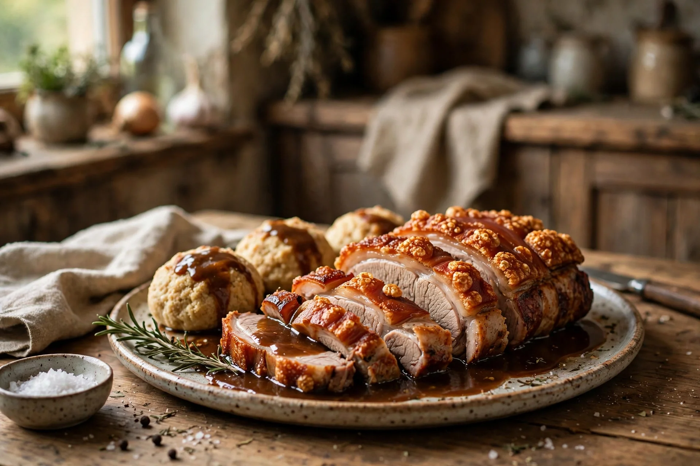

Start › Hauptgerichte
Hauptgerichte Rezepte
Vom schnellen Feierabend-Essen bis zum Sonntagsbraten: Diese Hauptgerichte sind die Lieblinge in Annas Küche – herzhaft, sättigend und mit einfachen Schritten erklärt, damit sie auch bei dir sicher gelingen.
 Ofengericht
OfengerichtKlassische Lasagne
Würzige Hackfleischsoße, cremige Béchamel und goldgelber Käse.
 Familienliebling
FamilienlieblingSpaghetti Bolognese
Langsam geschmorte Hackfleischsoße – der Liebling der ganzen Familie.
 Klassiker
KlassikerGeschnetzeltes Züricher Art mit Spätzle
Zartes Kalbfleisch in Rahmsoße mit hausgemachten Spätzle.
 Familienliebling
FamilienlieblingKäsespätzle
Weiche Spätzle, schmelzender Bergkäse und knusprige Röstzwiebeln.
 Ofengericht
OfengerichtCremiges Kartoffelgratin
Feine Kartoffelscheiben in Sahne, goldgelb überbacken.
 Klassiker
KlassikerFrikadellen
Saftig, würzig und außen schön gebräunt – wie bei Oma.
 Für Gäste
Für GästeRinderrouladen wie von Oma
Zart geschmort, würzig gefüllt – mit kräftiger Soße.

FestlichSchweinebraten mit Knödeln
Knusprige Kruste, saftiges Fleisch und fluffige Knödel.
 Klassiker
KlassikerRindergulasch wie von Oma
Butterzart geschmort, mit sämiger Zwiebel-Paprika-Soße.
 Klassiker
KlassikerRheinischer Sauerbraten
Langsam geschmort, mit süß-saurer Printensoße und Rosinen.
 Für Gäste
Für GästeJägerschnitzel mit Pilzsoße
Knusprig paniert mit cremiger Champignonsoße.
Mehr entdecken
Stöbere auch in Annas anderen Kategorien – von den Plätzchen-Klassikern bis zu den Kochbüchern aus ihrem Regal.